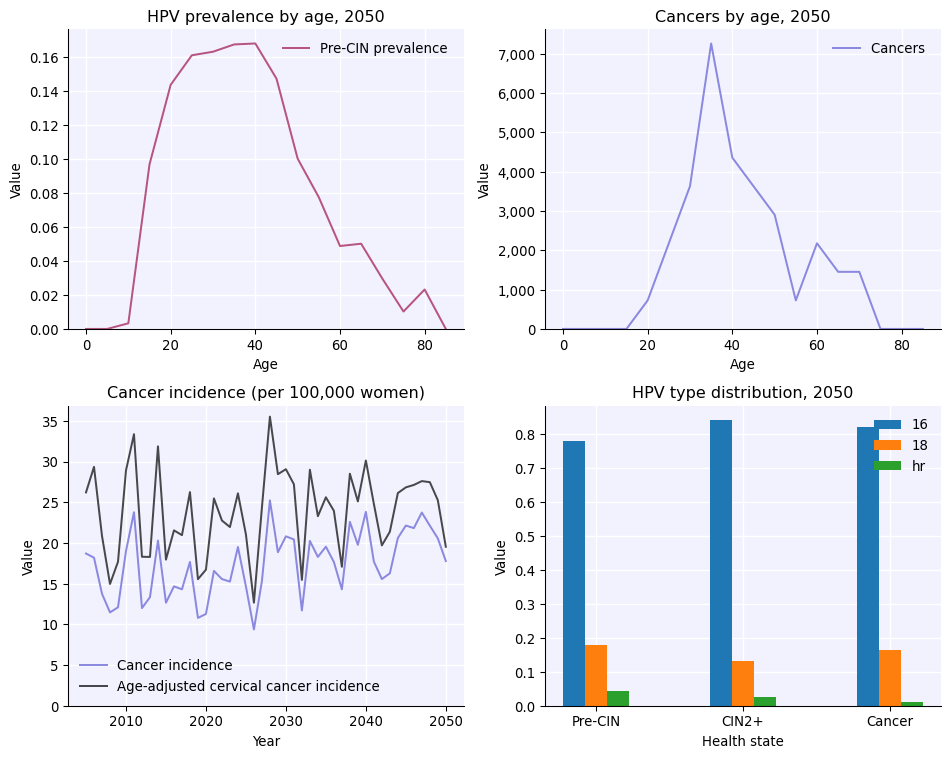

Installing and getting started with HPVsim is quite simple.
HPVsim is a Python package that can be pip-installed by typing pip install hpvsim into a terminal. You can then check that the installation was successful by importing HPVsim with import hpvsim as hpv.
The basic design philosophy of HPVsim is: common tasks should be simple. For example:
Defining parameters
Running a simulation
Plotting results
This tutorial walks you through how to do these things.
Click here to open an interactive version of this notebook.
Getting started
To create, run, and plot a sim with default options is just:
import hpvsim as hpvsim = hpv.Sim()sim.run()fig = sim.plot()
Defining parameters and genotypes, and running simulations
Parameters are defined as a dictionary. Some common parameters to modify are the number of agents in the simulation, the genotypes to simulate, and the start and end dates of the simulation. We can define those as:
pars =dict( n_agents =10e3, genotypes = [16, 18, 'hr'], # Simulate genotypes 16 and 18, plus all other high-risk HPV genotypes pooled together start =1980, end =2030,)
Running a simulation is pretty easy. In fact, running a sim with the parameters we defined above is just:
sim = hpv.Sim(pars)sim.run()
Loading location-specific demographic data for "nigeria"
Initializing sim with 10000 agents
Loading location-specific data for "nigeria"
Running 1980.0 ( 0/204) (0.02 s) ———————————————————— 0%
Running 1982.5 (10/204) (0.11 s) •——————————————————— 5%
Running 1985.0 (20/204) (0.20 s) ••—————————————————— 10%
Running 1987.5 (30/204) (0.30 s) •••————————————————— 15%
Running 1990.0 (40/204) (0.40 s) ••••———————————————— 20%
Running 1992.5 (50/204) (0.51 s) •••••——————————————— 25%
Running 1995.0 (60/204) (0.62 s) •••••——————————————— 30%
Running 1997.5 (70/204) (0.74 s) ••••••—————————————— 35%
Running 2000.0 (80/204) (0.86 s) •••••••————————————— 40%
Running 2002.5 (90/204) (0.98 s) ••••••••———————————— 45%
Running 2005.0 (100/204) (1.11 s) •••••••••——————————— 50%
Running 2007.5 (110/204) (1.24 s) ••••••••••—————————— 54%
Running 2010.0 (120/204) (1.37 s) •••••••••••————————— 59%
Running 2012.5 (130/204) (1.52 s) ••••••••••••———————— 64%
Running 2015.0 (140/204) (1.66 s) •••••••••••••——————— 69%
Running 2017.5 (150/204) (1.82 s) ••••••••••••••—————— 74%
Running 2020.0 (160/204) (1.98 s) •••••••••••••••————— 79%
Running 2022.5 (170/204) (2.13 s) ••••••••••••••••———— 84%
Running 2025.0 (180/204) (2.31 s) •••••••••••••••••——— 89%
Running 2027.5 (190/204) (2.49 s) ••••••••••••••••••—— 94%
Running 2030.0 (200/204) (2.67 s) •••••••••••••••••••— 99%
Simulation summary:
812,883,586 total HPV infections
540,904 total cancers
335,433 total cancer deaths
12.48 mean HPV prevalence (%)
12.83 mean cancer incidence (per 100k)
32.93 mean age of infection (years)
44.58 mean age of cancer (years)
48.82 mean age of cancer death (years)
This will generate a results dictionary sim.results. Results by genotype are named things like sim.results['infections'] and stored as arrays where each row corresponds to a genotype, while totals across all genotypes have names like sim.results['infections'] or sim.results['cancers'].
Rather than creating a parameter dictionary, any valid parameter can also be passed to the sim directly. For example, exactly equivalent to the above is:
You can mix and match too – pass in a parameter dictionary with default options, and then include other parameters as keywords (including overrides; keyword arguments take precedence). For example:
sim = hpv.Sim(pars, end=2050) # Use parameters defined above, except set the end data to 2050sim.run()
As you saw above, plotting the results of a simulation is rather easy too:
fig = sim.plot()

Full usage example
Many of the details of this example will be explained in later tutorials, but to give you a taste, here’s an example of how you would run two simulations to determine the impact of a custom intervention aimed at protecting the elderly.
import hpvsim as hpv# Custom vaccination interventiondef custom_vx(sim):if sim.yearvec[sim.t] ==2000: target_group = (sim.people.age>9) * (sim.people.age<14) sim.people.peak_imm[0, target_group] =1pars =dict( location ='tanzania', # Use population characteristics for Japan n_agents =10e3, # Have 50,000 people total in the population start =1980, # Start the simulation in 1980 n_years =50, # Run the simulation for 50 years burnin =10, # Discard the first 20 years as burnin period verbose =0, # Do not print any output)# Running with multisims -- see Tutorial 3s1 = hpv.Sim(pars, label='Default')s2 = hpv.Sim(pars, interventions=custom_vx, label='Custom vaccination')msim = hpv.MultiSim([s1, s2])msim.run()fig = msim.plot(['cancers', 'cins'])
Loading location-specific demographic data for "tanzania"
Loading location-specific demographic data for "tanzania"